Black Scholes
Stochastic Differential Equations
Now that we have defined Brownian motion, we can utilise it as a building block to start constructing stochastic differential equations (SDE). We need SDE in order to discuss how functions f=f(s) and their derivatives with respect to S behave, where S is a stock price determined by a Brownian motion.
Some of the rules of ordinary calculus do not work as expected in a stochastic world. We need to modify them to take into account both the random behaviour of Brownian motion as well as its non-differentiable nature. We will begin by discussing stochastic integrals, which will lead us naturally to the concept of an SDE.
Definition (Stochastic Integral)
A stochastic integral of the function f=f(t) is a function
W=W(t),t ∈ [0,T] given by:
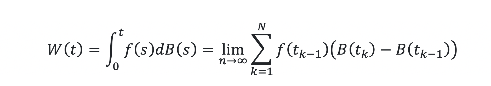
where tk=kt/N.
Note that the function f is non-anticipatory, in the sense that it is evaluated within the summation sign at time tk-1. This means that it has no information as to what the random variable at X(tk) is. Supposing that f represented some portfolio allocation based on B, then if it were not evaluated at tk−1, but rather at tk, we would be able to anticipate the future and modify the portfolio accordingly.
The previous expression provided for W(t) is an integral expression and thus is well-defined for a non-differentiable variable, B(t), due the property of finiteness as well as the chosen mean and variance. However, we wish to be able to write it in differential form:
One can consider the term dB as being a normally distributed random variable with zero mean and variance dt. The formal definition is provided:
Definition (Stochastic Differential Equation)
Let B(t) be a Brownian motion. If W(t) is a sequence of random variables, such that for all t,
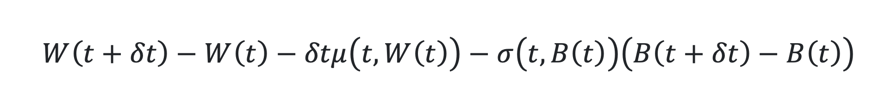
is a random variable with mean and variance that rae o(δt), then:
is a stochastic differential equation for W(t).
A sequence of random variables given by the above is termed an Ito drift-diffusion process, or simply an Ito process or a stochastic process.
It can be seen that μ and σ are both functions of t and W. μ has the interpretation of a non-stochastic drift coefficient, while σ represents the coefficient of volatility - it is multiplied by the stochastic dB term. Hence, stochastic differential equations have both a non-stochastic and stochastic component.
In the following section on geometric Brownian motion, a stochastic differential equation will be utilised to model asset price movements.
Geometric Brownian Motion
The usual model for the time-evolution of an asset price S(t) is given by the geometric Brownian motion, represented by the following stochastic differential equation:
Note that the coefficients μ and σ, representing the drift and volatility of the asset, respectively, are both constant in this model. In more sophisticated models they can be made to be functions of t,S(t) and other stochastic processes.
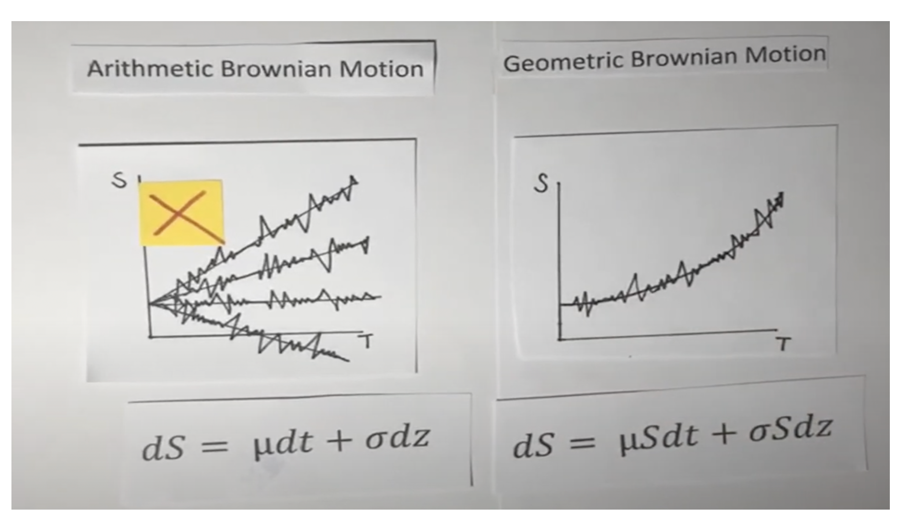
The solution S(t) can be found by the application of Ito's Lemma to the stochastic differential equation.
Dividing through by S(t) in the above equation leads to:
Notice that the left hand side of this equation looks similar to the derivative of logS(t). Applying Ito's Lemma to logS(t) gives:
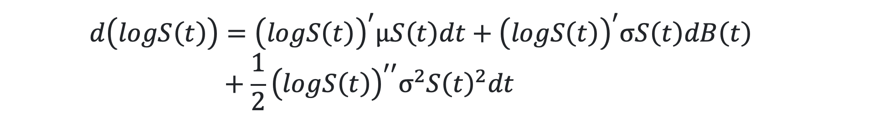
This becomes:
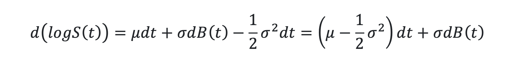
This is an Ito drift-diffusion process. It is a standard Brownian motion with a drift term. Since the above formula is simply shorthand for an integral formula, we can write this as:
Finally,taking the exponential of this equation gives:
This is the solution the stochastic differential equation. In fact it is one of the only analytical solutions that can be obtained from stochastic differential equations.
Ito’s Lemma
Ito's Lemma is a key component in the Ito Calculus, used to determine the derivative of a time-dependent function of a stochastic process. It performs the role of the chain rule in a stochastic setting, analogous to the chain rule in ordinary differential calculus. Ito's Lemma is a cornerstone of quantitative finance and it is intrinsic to the derivation of the Black-Scholes equation for contingent claims (options) pricing.
It is necessary to understand the concepts of Brownian motion, stochastic differential equations and geometric Brownian motion before proceeding.
The Chain Rule
One of the most fundamental tools from ordinary calculus is the chain rule. It allows the calculation of the derivative of chained functional composition. Formally, if W(t) is a continuous function, and:
Then the chain rule states:
When f has t as a direct dependent parameter also, we require additional terms and partial derivatives. In this instance, the chain rule is given by:
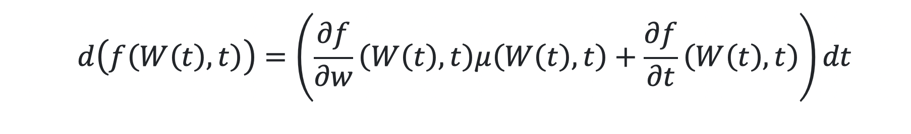
In order to model an asset price distribution correctly in a log-normal fashion, a stochastic version of the chain rule will be used to solve a stochastic differential equation representing geometric Brownian motion.
The primary task is now to correctly extend the ordinary calculus version of the chain rule to be able to cope with random variables.
Theorem(Ito's Lemma)
Let B(t) be a Brownian motion and W(t) be an Ito drift-diffusion process which satisfies the stochastic differential equation:
If f(w,t)∈C2(R2,R) then f(W(t),t) is also and Ito drift-diffusion with its differential given by:
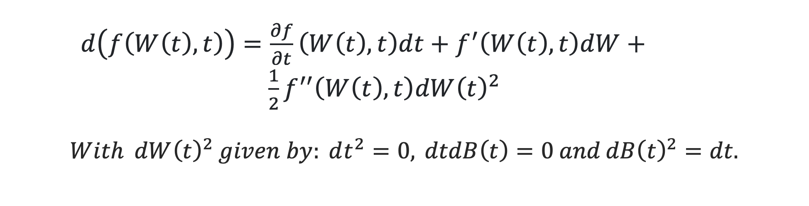
With dW(t)2 given by: dt2=0, dtdB(t)=0∧dB(t)2=dt.
Deriving the Black-Scholes
Now that we have derived Ito's Lemma, we are in a position to derive the Black-Scholes equation.
Suppose we wish to price a vanilla European contingent claim C, on a time-varying asset S, which is set to mature at T. We shall assume that S follows a geometric Brownian motion with mean growth rate of μ and volatility σ. r will represent the continuously compounding risk free interest rate.r , μ and σ are not functions of time, t, or the asset price S and so are fixed for the duration of the option's lifetime.
Since our option price,C , is a function of time t and the price of the asset S, we will use the notation C=C(S,t) to represent the price of the option. Note that we are assuming at this stage that C exists and is well-defined. We will later show this to be a justified claim.
The first step is to utilise Ito's Lemma on the function C(S,t) to give us a SDE:

Our asset price is modelled by a geometric Brownian motion, the expression for which is recalled here. Note that μ and σ are constant - i.e. not functions of S or t:
We can substitute this expression into Ito's Lemma to obtain:
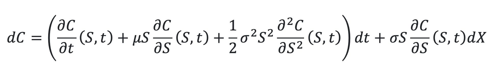
The thrust of our derivation argument will essentially be to say that a fully hedged portfolio, with all risk eliminated, will grow at the risk free rate. Thus, we need to determine how our portfolio changes in time. Specifically, we are interested in the infinitesimal change of a mixture of a call option and a quantity of assets. The quantity will be denoted by Δ. Hence:
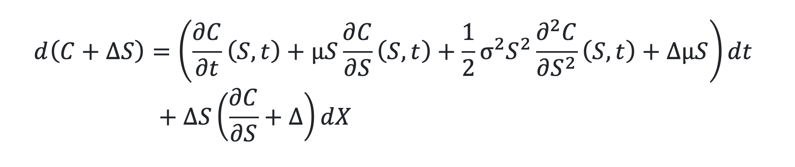
This leads us to a choice for Δ which will eliminate the term associated with the randomness. If we set δ = -∂C/∂S(S,t), we receive:
Note that we have glossed over the issue of what the derivative of Δ is. We will return to this later.
This technique is known as Delta-Hedging and provides us with a portfolio that is free of randomness. This is how we can apply the argument that it should grow at the risk free rate, otherwise, as with our previous arguments, we would have an arbitrage opportunity. Hence the growth rate of our delta-hedged portfolio must be equal the continuously compounding risk free rate, r.
Thus we are able to state that:
If we rearrange this equation, and using shorthand notation to drop the dependence on (S,T) we arrive at the famous Black-Scholes equation for the value of our contingent claim:
Although we have derived the equation, we do not yet possess enough conditions in order to provide a unique solution. The equation is a second-order linear partial differential equation (PDE) and without boundary conditions (such as a payoff function for our contingent claim), we will not be able to solve it.
One payoff function we can use is that of a European call option struck at K. This has a payoff function at expiry, T, of:
We are now in a position to solve the Black-Scholes equation.
Black Scholes Pricing formula
It has already been outlined that the reader is to be familiar with the Black-Scholes formula for the pricing of European Vanilla Calls and Puts. For completeness, the price of a European Vanilla Call, C(S,t) is given below, where S is the underlying asset, K is the strike price, r is the risk-free rate, T is the time to maturity and σ is the (constant) volatility of the underlying S(N is described below):
With d1 and d2 defined as follows:
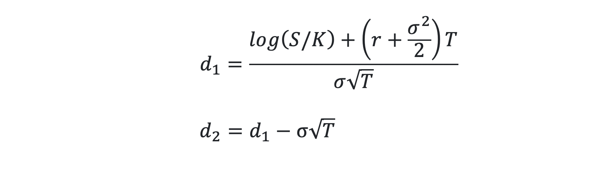
Thanks to Put-Call Parity, we are also able to price a European Vanilla Put P(S,t) with the following formula:
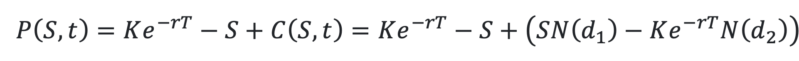
The remaining function we have yet to describe is N. This is the cumulative distribution function of the standard normal distribution. The formula for N is given by:
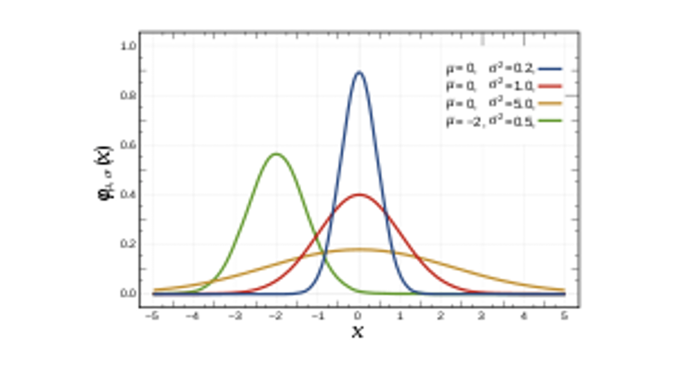
In addition, we would like to have closed form solutions for the "Greeks", which are the option price sensitivities to the underlying variables and parameters. For this reason we also need the formula for the probability density function of the standard normal distribution which is given below:
Code Snippets To Calculate the Black-Scholes Pricing Value:
With our ticker symbols saved in a list, we can iterate through the list and query the Alpha Vantage API for daily price data.
from math import exp, log, sqrt, pi
from statistics import norm_pdf, norm_cfd
def norm_pdf(x):
"""
Standard normal probability density function
"""
return (1.0/((2*pi)**0.5))*exp(-0.5*x*x)
def norm_cdf(x):
"""
An approximation to the cumulative distribution
function for the standard normal distribution:
N(x) = \frac{1}{sqrt(2*\pi)} \int^x_{-\infty} e^{-\frac{1}{2}s^2} ds
"""
k = 1.0/(1.0+0.2316419*x)
k_sum = k * (0.319381530 + k * (-0.356563782 + \
k * (1.781477937 + k * (-1.821255978 + 1.330274429 * k))))
if x >= 0.0:
return (1.0 - (1.0 / ((2 * pi)**0.5)) * exp(-0.5 * x * x) * k_sum)
else:
return 1.0 - norm_cdf(-x)
def d_j(j, S, K, r, v, T):
"""
d_j = \frac{log(\frac{S}{K})+(r+(-1)^{j-1} \frac{1}{2}v^2)T}{v sqrt(T)}
"""
return (log(S/K) + (r + ((-1)**(j-1))*0.5*v*v)*T)/(v*(T**0.5))
def vanilla_call_price(S, K, r, v, T):
"""
Price of a European call option struck at K, with
spot S, constant rate r, constant vol v (over the
life of the option) and time to maturity T
"""
return S * norm_cdf(d_j(1, S, K, r, v, T)) - \
K*exp(-r*T) * norm_cdf(d_j(2, S, K, r, v, T))
def vanilla_put_price(S, K, r, v, T):
"""
Price of a European put option struck at K, with
spot S, constant rate r, constant vol v (over the
life of the option) and time to maturity T
"""
return -S * norm_cdf(-d_j(1, S, K, r, v, T)) + \
K*exp(-r*T) * norm_cdf(-d_j(2, S, K, r, v, T))